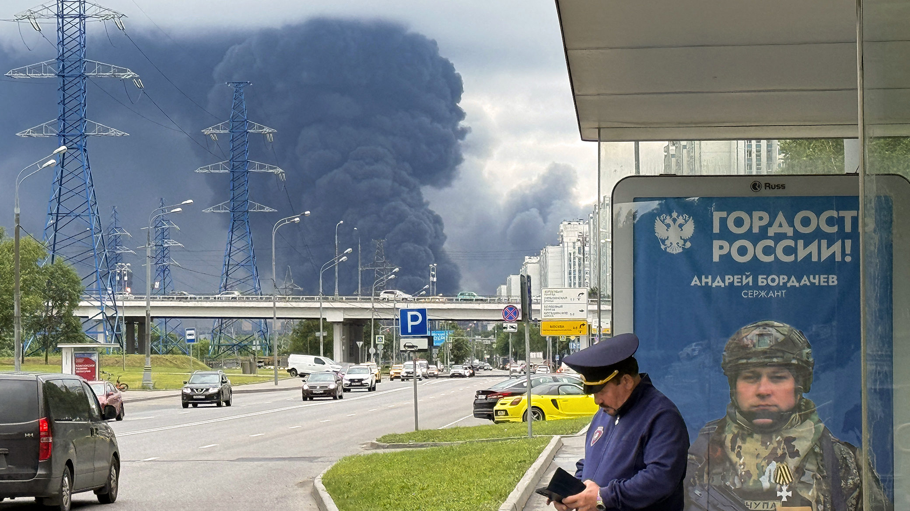

 ▶Watch the video on YouTube
▶Watch the video on YouTubeDate saved: 2026-10-18 18:00 (PDT)
Sources: CSIS, Al Jazeera, OSW (Polish Institute), Foreign Policy, RBC-Ukraine, Institute for the Study of War
Key findings
Russian casualties and battlefield costs balloon
- CSIS (Jul 1, 2026): Russia has suffered approximately 1.4 million battlefield casualties — including killed, wounded, and missing soldiers — between February 2022 and June 2026, with as many as 450,000 deaths. Russian fatalities in Ukraine are more than four times greater than all US fatalities in all wars combined since World War II. Monthly casualty rates exceeded 30,000 per month in 2026, likely surpassing Russia's recruitment rates of roughly 27,000 new recruits per month. The Russia-Ukraine casualty ratio has risen to nearly 8:1 in the first half of 2026, up from 2:1 to 3:1 for much of the war, largely due to Ukraine's use of AI-enabled drones. Russia's territorial control in Ukraine shrank in spring 2026, with a net loss of roughly 400 square kilometers in April and May — the first monthly net losses since August 2024. Putin dramatically scaled back his May 2026 military parade due to concerns about Ukrainian long-range strikes. (Source)
Front lines: Russian offensive stalls, Ukraine advances
- Al Jazeera (Oct 16, 2026): Ukraine's Third Army Corps concluded a fourth phase of Operation Vivaldi in Donetsk, reclaiming an additional 100 sq km of territory, bringing total gains to 275 sq km and 16 settlements since August. Russia's overall gains this year are close to nil. Russian forces averaged 14 attacks per day in the Sloviansk direction in August, dropping to 5 in September and 3 in October. In the Kramatorsk direction, attacks fell from 3 per day in August to 0.3 per day in October. Ukrainian commander Robert Brovdi reported Russian casualties increased 25% in the first two weeks of October vs. September, and nearly 60% vs. August. In Dobropillya, Russian casualties were 43% above September's rate and double August's. Zelenskyy said Russian forces outnumber Ukraine's 6-to-8 to 1 in some sectors. (Source)
- OSW (Feb 24, 2026): In year four of the war, Russian forces maintained the initiative and made battlefield advances but failed to achieve significant operational gains or a strategic breakthrough. The Ukrainian army held a coherent defensive line and prevented a collapse. Russia launched unprecedented attacks on Ukraine's energy system in winter 2025/26, aiming to trigger a humanitarian crisis. The ground offensive was accompanied by regular drone strikes involving up to several hundred attack drones per day. (Source)
Energy infrastructure war intensifies
- Al Jazeera (Oct 16, 2026): Over a 24-hour period on October 14, Russia launched 850 drones and 39 missiles, striking 30 energy targets across 19 regions of Ukraine — despite Trump having declared an "energy ceasefire" on October 11. Five ballistic missiles struck Kyiv's Thermal Power Plant No. 4, causing power outages. Starshield (SpaceX's military Starlink), capped Ukraine's navigation services at 160 km/h, making it difficult or impossible to intercept Russian jet-powered Geran-4 drones flying at over 500 km/h. Elon Musk stated: "Starshield systems are owned and controlled by the US government. Any limits on speed or usage are decided by the US military and ultimately POTUS." Six in 10 Russian drones are now jet-powered. (Source)
- Foreign Policy (Jul 9, 2026): Ukraine has hit Russian oil refineries 194 times since the start of 2026, 11 times as often as the same period in 2025. The Ukrainian strategy aims to "cut off a significant share of the revenues financing the Russian war budget, trigger a fuel crisis, and surgically sever the critical links in the defense-industrial supply chain." Ukraine's strikes have taken 42.74% of Russia's total design oil-refining capacity out of operation. Russian cities including Moscow and St. Petersburg have come under attack by Ukrainian drones and long-range missiles, and Crimea has been forced to close summer camps and beaches. (Source)
Ukraine's deep-strike campaign inside Russia
- Al Jazeera (Oct 16, 2026): While respecting Trump's energy ceasefire for three days, Ukraine returned to striking Russian refineries on October 15. On October 15, it destroyed four Sukhoi fighters and damaged two more at the Borisoglebsk airfield in Voronezh. Ukraine targeted three Yandex data centers, destroying or crippling those in Sasovo, Kaluga, and Vladimir between October 8-11, and struck a Sberbank data center on October 14, causing Russians to lose online payment services. Ukraine struck a facility manufacturing explosives and rocket fuel in Nizhny Novgorod on October 9, and a plant making additives for missile fuels in the Tver region. During September, Ukraine struck 40 command posts and 50 logistics facilities. (Source)
- CSIS (Jul 1, 2026): Ukraine has orchestrated short-range strikes (less than 30 km) against thousands of targets just across the border in Russia and in Russian-controlled areas like Crimea, causing operational challenges including decreasing Russia's energy refining capacity, causing gasoline shortages, largely knocking out Russia's navy from the war, disrupting logistics, and attritting industrial production. (Source)
US-Ukraine relations fracture
- Al Jazeera (Oct 16, 2026): Trump lifted some oil sanctions against Russia on October 9, inviting Russia to sell 1.8 million tonnes of diesel to the global market — effectively reversing the Lindsey Graham Act he had signed days earlier. Ukraine's partners did not share intelligence that five ballistic missiles were headed toward Kyiv on October 13. Starshield capped Ukraine's navigation services. Zelenskyy told Piers Morgan: "It is a pity we are losing… a strong partner. It's painful when President Trump chooses one side, not our side. This is not the right side of history." The US had also stopped sharing intelligence with Ukraine in March, helping Russia reclaim Kursk. Ukraine's Defense Ministry orders in 2026 were up 50% vs. 2025, with delivery volumes nearly four times last year's, in partnership with European allies. (Source)
- RBC-Ukraine (2026): Over the past month, Russian losses reached 40,000, more than 60% of them killed. Ahead of winter, the exchange of strikes will most likely only intensify: Russia will again try to hit Ukraine's energy sector, counting on using the cold as an additional tool of pressure. (Source)
Source links
- CSIS — Russian Blood and Treasure: The Ballooning Costs of Putin's War
- Al Jazeera — Ukraine advances in occupied Donetsk as Trump hands Putin diesel deal
- OSW — Year four of the war: the front stabilises, negotiations stall
- Foreign Policy — Ukraine Finally Has a Theory of Victory in the War Against Russia
- RBC-Ukraine — Putin's ballistic terror could be his own trap
- Institute for the Study of War — Russian offensive operations assessment